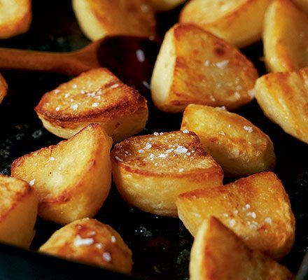

Roast potatoes

Lovely Crispy and Fluffy Roast potatoes
Ingredients
- 1kg Potatoes
- 200g Goose fat
- Flour
- Salt and pepper
Steps
- Peel potatoes and cut them into equally sized pieces
- In a pan bring water to the boil
- Pre heat oven to 200°C and place roasting tin big enough for the potatoes to lie in one layer into the oven
- When the water is boiling place the potatoes into the boiling water. Cook for about 5 minutes
- When the oven has reached 200°C put goose fat into the roasting tin. Let the fat heat up for a minimum of 5 minutes
- After the potatoes have boiled for 5 minutes drain them in a collander. In the collander shake up the potatoes to rough up the Potatoes.
- Sprinke 2 - 3 Tablespoons of flour over the potatoes. Shake them in the collander untill they are completly covered in flour
- Place the potatoes into the hot fat. Fat can and should sizzle when you place the potatoes into it. Turn the potatoes in the fat untill the potatoes are completly covered in fat.
- Put tin into hot oven and roast for 15 minutes
- After 15 minutes turn over the potatoes and return them to the oven for another 15 minutes
- After the second 15 minutes turn the potatoes over again and return them into the oven till golden brown. At witch point take them out of the oven and put salt over the potatoes. Serve hot
Back to Homepage